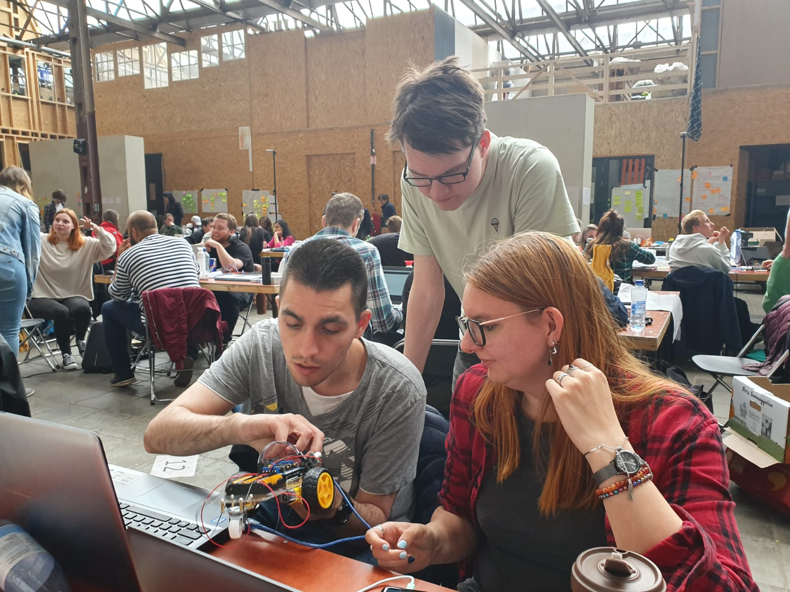
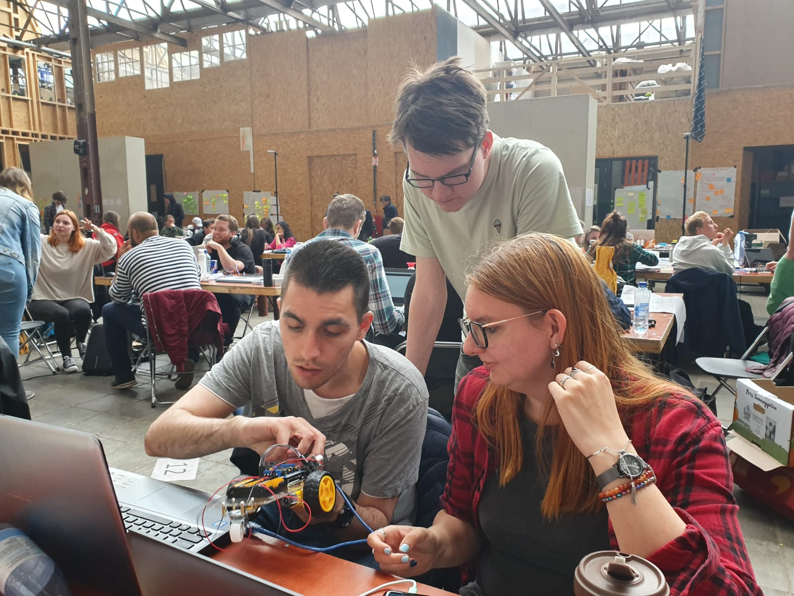

Human Computer Interaction - Door Yannick Kok
Hey! Ik ben Yannick Kok, tweedejaars student Communication & Multimedia Design aan de Haagse Hogeschool.
Tijdens dit tweede jaar volg ik het vak Human Computer Interaction (HCI).
Deze website dient als portfolio om te laten zien wat ik tijdens dit vak heb gedaan.
Het vak HCI is opgedeeld in vier onderwerpen: wearables (producten die je kunt dragen), artificial creatures (kunstmatige scheppingen),
AR/VR (artificial reality & virtual reality) en playful interfaces.
Het vak HCI duurt acht weken. In de eerste zes weken volg je als student lessen, doe je mee met workshops, maak je opdrachten, doe je onderzoek en ga je op excursie.
Dit allemaal om kennis te vergaren over de onderwerpen.
In de laatste twee weken gebruik je de opgedane kennis in de zogenaamde labweeks.
Het doel van de labweeks is om in groepsverband een product te ontwerpen wat met een van de vier onderwerpen te maken heeft. Op de laatste dag toon je je project tijdens een expositie.
Ik verwacht tijdens dit vak veel praktische dingen te leren. De focus van dit vak ligt namelijk erg op het maken van dingen in de praktijk, terwijl de rest van de vakken soms erg theoretisch kunnen zijn.
Ik hoop dat er tijdens de expositie mooie dingen gemaakt zijn door alle groepen, zodat de bezoekers van de expositie trots kunnen zijn.
Als student CMD merk ik dat je veel kanten op kunt. Momenteel wil ik mij het liefst focusen op het toepassen van code. Ik hoop dan ook dat ik mooie dingen kan programmeren tijdens dit vak.
 

Ik, Dennis en Nicolette aan het werk tijdens de labweeks.
Foto gemaakt door Hiba.